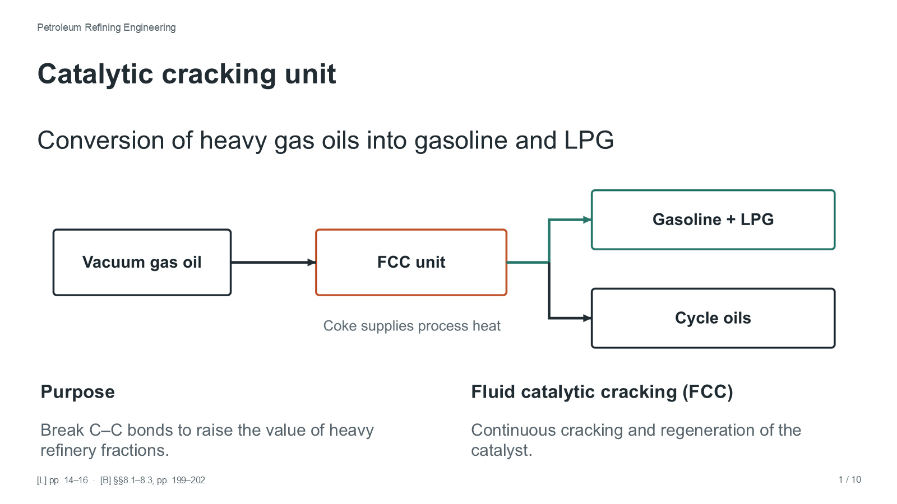

Skip to slides
Catalytic cracking unit
Petroleum Refining Engineering · 1 October · 10 slides
Download PowerPoint

Previous
Next
Speaker notes
Full screen
←
→
move between slides ·
F
full screen ·
N
notes ·
Home
first slide
Speaker notes and sources